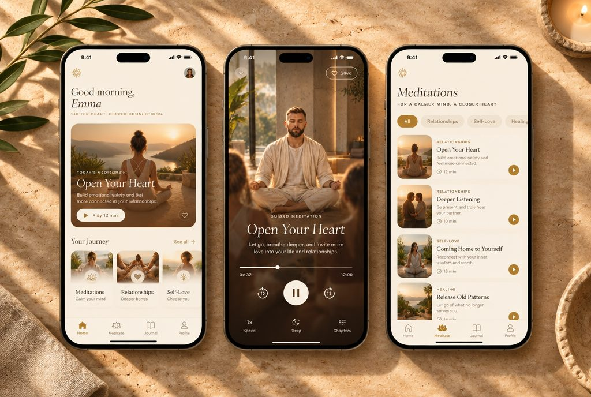
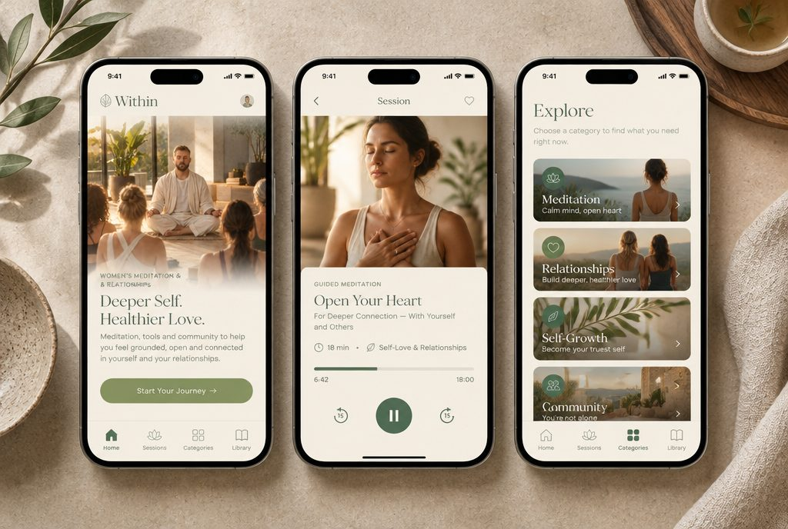
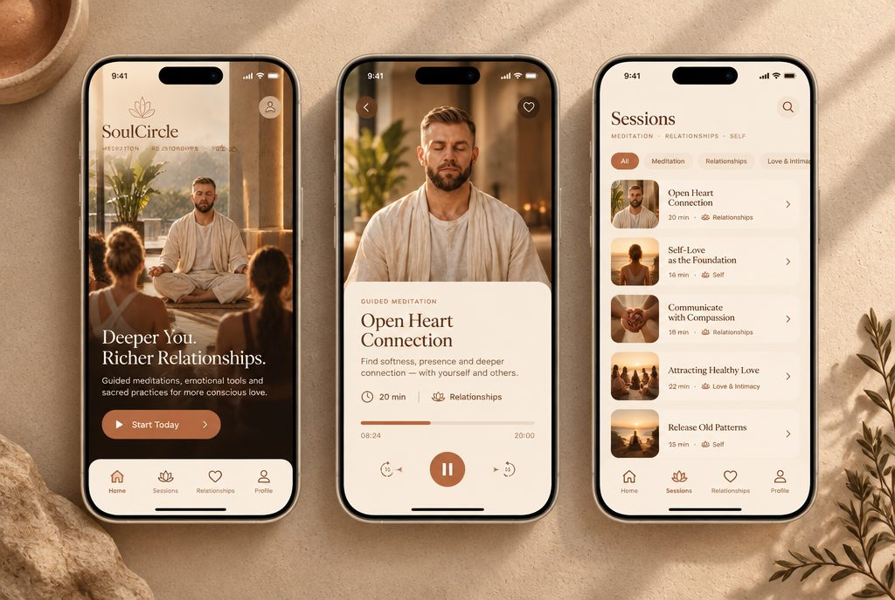
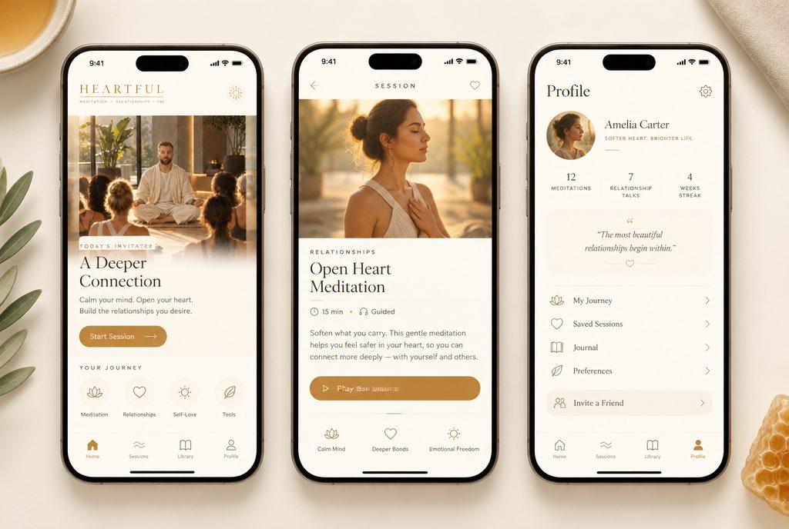
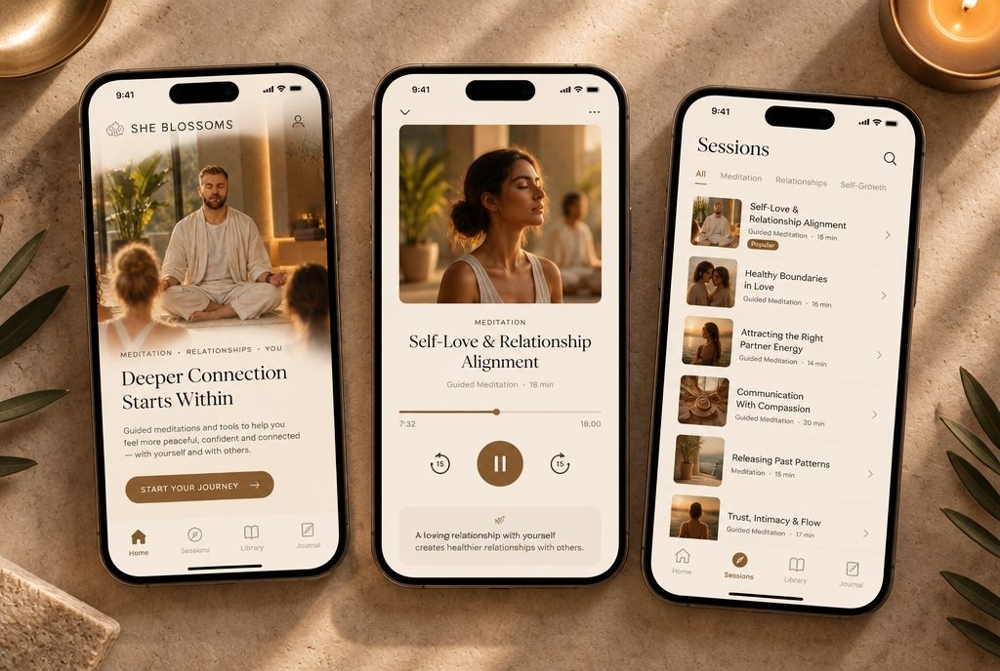
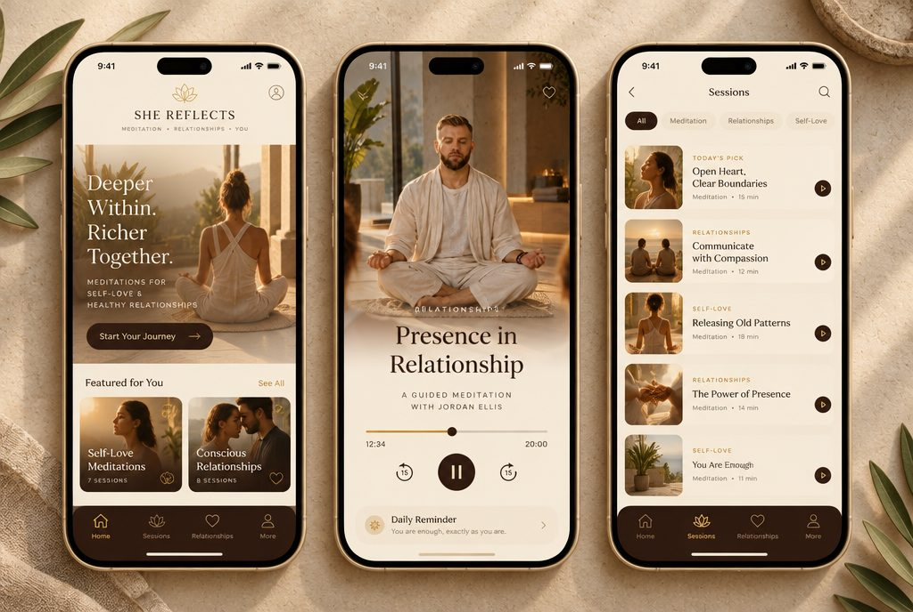
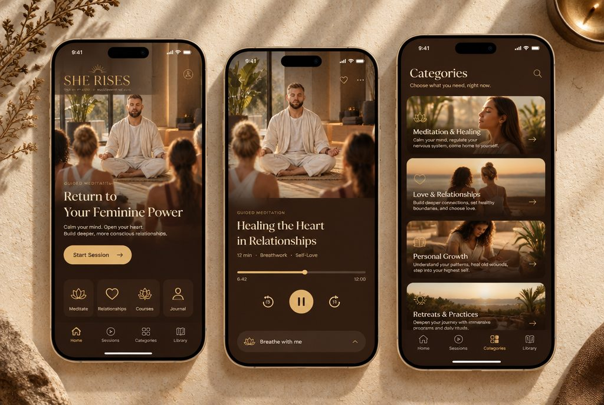
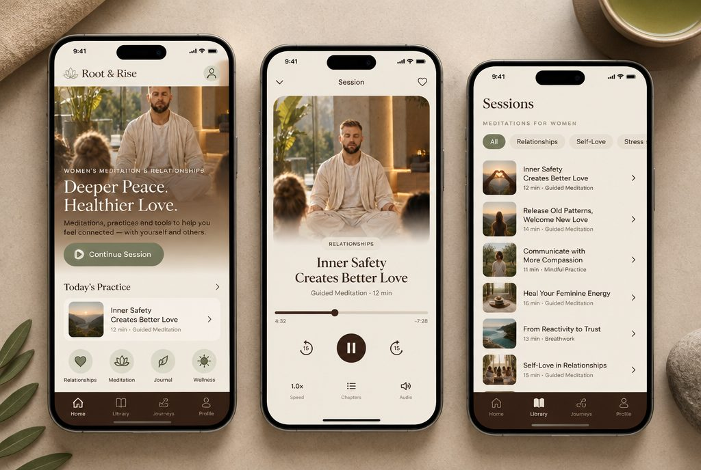
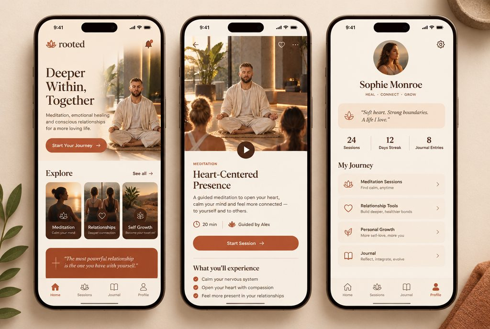
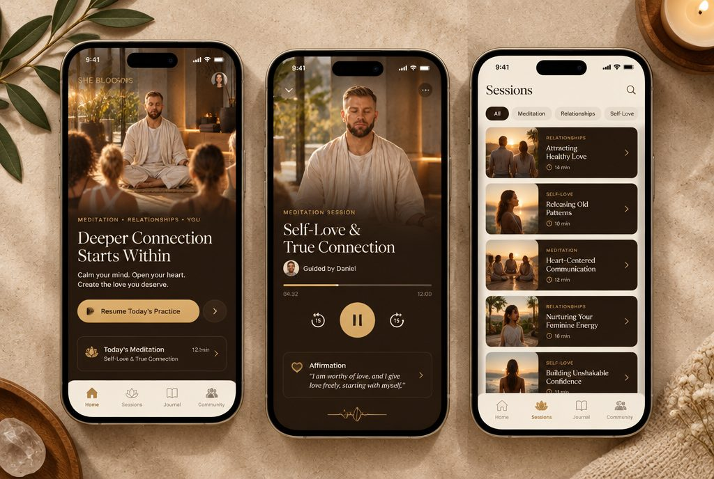

Иммерсия · тёплая спа-эстетика
Цветовые решения
По референсу «золотого часа» (лён, камень, растения, дорогой ретрит) — цветовые решения приложения, каждое с экранами. Мягкий свет, воздух, спокойствие.
Светлые

1 · Золотой час — крем, песок, мягкое золото (ближе всего к референсу).

2 · Шалфей и лён — бежевый/овсяный с шалфейно-зелёным акцентом и деревом.

3 · Глина и песок — тёплая терракота, песок, крем; заземлённо.

4 · Молоко и мёд — очень светлый молочный с медово-янтарным акцентом.

5 · Тёплый камень — серо-бежевый камень с бронзой и свечным золотом.
С тёмно-коричневым

6 · Крем и эспрессо — светлый фон, тёмно-коричневый текст, кнопки и меню.

7 · Орех и песок — песок с тёмным ореховым деревом в карточках и золотом.

8 · Овёс и какао — светлый овёс с тёмным какао-акцентом и ноткой шалфея.

9 · Крем, шоколад, терракота — крем с шоколадно-коричневым и тёплой терракотой.

10 · Тёмно-коричневый герой — светлая база с крупным шоколадным блоком-героем, контраст.